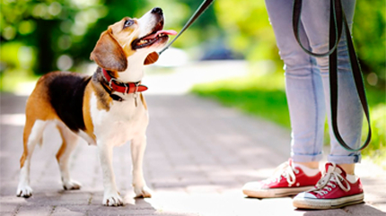

Меня зовут Арина, и я - волонтёр.
Кто такой волонтёр? Это человек, помогающий безвозмездно в какой-либо общественной деятельности.
Можно
помогать в поиске пропавших, в уборке загрязнённых мест леса, в домах престарелых, в детдомах, в
приюте
животных и так далее. В основном я помогаю животным, потому что считаю - они точно не заслужили
той
жестокости, которую обрушивает на них человечество.
В данный момент проживаю в городе Краснодаре. Учусь на зоотехнолога. Помимо волонтёрской
деятельности, с
2017 года я занимаюсь передержкой и пристройством домашних животных. Кроме того, я веду
блог в Instagram,
где рассказываю о своих подопечных, трудностях, с которыми приходится сталкиваться
волонтёру,
а также делюсь опытом с теми, кто тоже хочет помогать животным.
Я работаю зооняней, то есть с радостью приду на помощь, если Вы из Краснодара, и Вам не с кем
оставить своего питомца или по каким-то
причинам ему нужен присмотр.
У меня есть все необходимые навыки ухода за животными - могу поставить
укол, помыть, почистить глаза и уши, постричь когти, сделать перевязку и т.д.
Я люблю животных и знаю, как найти подход к каждому!
Ниже можно ознакомиться с примерным перечнем того, что я предлагаю и стоимостью моей работы.

Выезд на дом, кормить животных на время вашего отъезда
250 руб./день + Вы оплачиваете проезд.
Выгул собак неподалеку от моего места проживания
100 руб./час
Передержка домашних кошек
150 руб./день + Ваш корм и наполнитель
Передержка собак (домашних, уличных, после стерилизации)
Кроме тех питомцев, у которых есть хозяин или куратор, у меня
регулярно находятся те, кого я
подобрала на улице
Реквизиты для перевода
Номер карты: 5543 6684 5634 6899
Номер телефона: +7 999 000-01-01
Держатель карты: Имя Отчество Ф.
Внимание: у меня нет другого счёта или карты
другого банка! Остерегайтесь мошенников!
Помимо еды и воды, очень часто этим животным
нужно медицинское обследование и лечение.
Многие неравнодушные люди существенно облегчают мне задачу
содержания таких животных, помогая мне финансово.
Если Вы тоже хотите помочь моим подопечным, то можете перевести
любую сумму на мой счёт в Сбербанке. При переводе денег на
конкретное животное, просьба указать это в комментарии к платежу.
Отчёты
Подробные отчёты о расходовании всех
переведённых мне денежных средств можно
посмотреть здесь